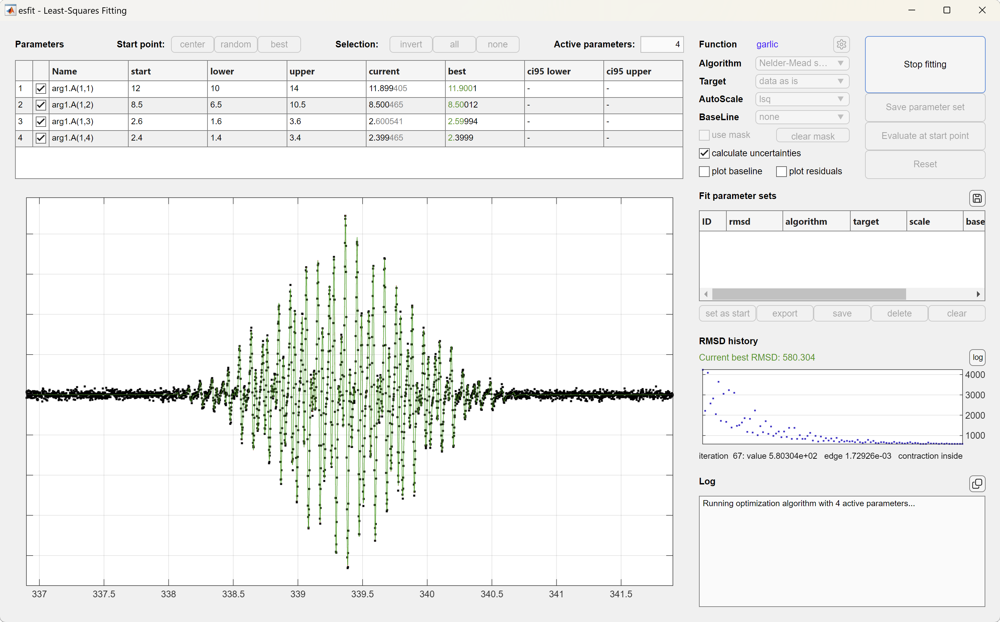
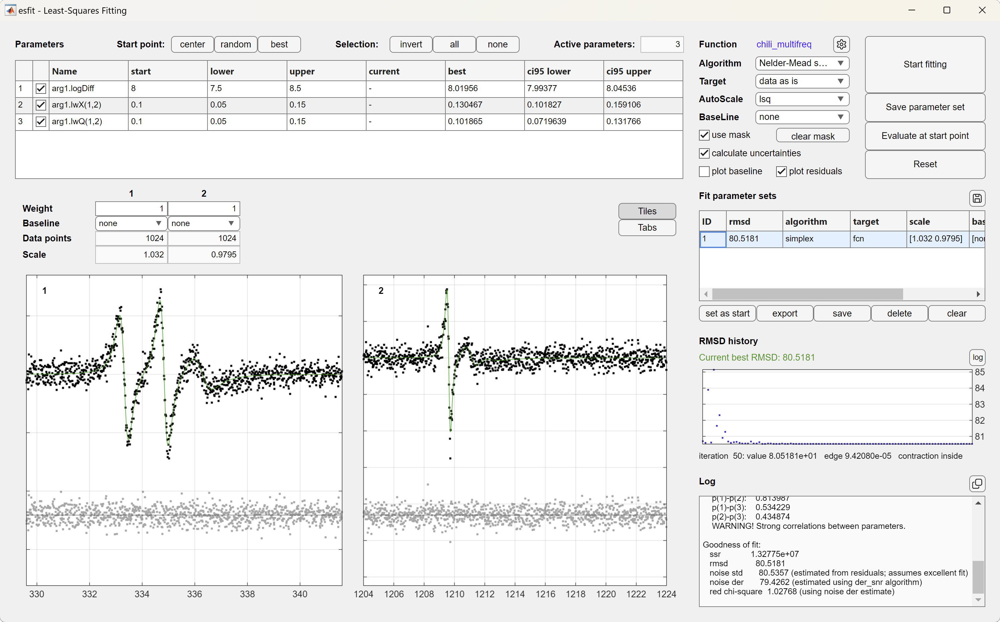

- EasySpin
- Documentation
- Publications
- Website
- Academy
- Forum
This user guide explains how to extract magnetic parameters from experimental EPR spectra by fitting an EasySpin simulation result to the experimental spectra using least-squares fitting techniques. EasySpin's function esfit contains all the necessary machinery. The function can also be used for least-squares fitting arbitrary models to arbitrary data. esfit calculates uncertainties (error bars) for the fitted parameters.
This tutorial contains the following topics:
There are the following advanced topics:
To get the most out of the EasySpin fitting features, work through this tutorial and study the associated examples.
EasySpin's function that performs least-squares fitting is esfit and can be called with up to six input arguments:
esfit(spc,@pepper,{Sys0,Exp},{SysVary})
esfit(spc,@pepper,{Sys0,Exp},{SysVaryLB},{SysVaryUB})
esfit(spc,@pepper,{Sys0,Exp0},{SysVary,ExpVary})
esfit(spc,@pepper,{Sys0,Exp,SimOpt},{SysVary})
esfit(spc,@pepper,{{Sys1,Sys2},Exp},{{SysVary1,SysVary2}})
esfit(spc,@pepper,{Sys0,Exp,SimOpt},{SysVary},FitOpt)
esfit(spc,@pepper,{Sys0,Exp,SimOpt},{SysVaryLB},{SysVaryUB},FitOpt)
Here is what the various parameters mean:
@pepper indicates that the function pepper is to be used. Any other EasySpin simulation function can be given here, e.g. @garlic, @chili, @salt', @saffron, @curry. You can also define your own function as described below.
spc is the array containing the experimental spectral data. For global fitting of several data sets, they can be provided as a cell array, combined with a custom fitting function that returns a cell array as output for the calculated data (see details below). For the fitting, the abscissa values are not needed.
Sys0 is a structure collecting magnetic parameters of the spin system. The parameter values in this structure are used as starting point in the fitting procedure. For a multi-component fit, this is a list of spin systems, one for each component, e.g. {Sys1, Sys2}.
SysVary is a structure similar to Sys0 containing the search ranges of the parameters that should be fitted. For example, SysVary.lwpp = 3 indicates that the lwpp parameter can be varied by up to 3 from the center value. For a multi-component fit, SysVary> is again a list of structures, one for each component, e.g. {Vary1, Vary2}.
Alternatively, two separate structures containing the upper and lower bounds, SysVaryLB and SysVaryUB, can be provided.
Exp (or Exp0) is a structure containing the experimental parameters for the simulation function.
ExpVary is a structure containing variation ranges for the experimental parameters to be fitted.
The following two parameters are optional
SimOpt contains settings for the spectral simulation function.
FitOpt contains settings for the least-squares fitting algorithm.
The next few sections explain how to set up these input parameters so that esfit can be called.
Before you can fit parameters to your experimental spectrum, import the experimental data into MATLAB. There are several ways to do this, depending in which format the data are stored.
If your spectrum was acquired with a Bruker spectrometer, it is most likely either in ESP format (having file extensions .par and .spc) or in BES3T format (with file extensions .DSC and .DTA). Both formats, as well as formats from other spectrometer brands, are handled by EasySpin's function eprload. Here is an example: Suppose your data are stored in the files dpph.DSC and dpph.DTA. To load them into MATLAB, type
[B,spc,Params] = eprload('dpph.DTA');
This returns the magnetic-field values in B, the spectral data in spc, and all the experimental parameters in the structure Params.
Often, experimental spectral data come in text files, containing two columns of data, where the first column is the magnetic field and the second column contains the spectral intensity. To load such a file into MATLAB, use the function textread:
[B,spc] = textread('dpph.txt','%f %f');
textread is a very flexible function that can accommodate many different text file formats. E.g. it can skip header lines if told to do so, it can accommodate comment lines, etc. See the MATLAB documentation for more details.
esfit needs to know with which parameter values to start looking for an optimal fit. These starting parameters are given as a spin system within the third input argument to esfit. For example, if the spectrum is that of a simple S=1/2 with rhombic g and an isotropic line width, one would start with
Sys0.g = [1.99, 2.07, 2.11]; Sys0.lw = 1; % mT
Some algorithms use this set of parameters as the starting set, while others use it to define the center of the search range.
Of course, the fitting function must also be provided with the experimental parameters for the spectral simulations. These are given as a structure Exp within the third input argument, in a cell array also including Sys0. The Exp structure is directly forwarded to the simulation functions pepper, garlic, chili, etc. For details, see the documentation of these functions.
The whole third input argument to esfit, {Sys0,Exp} or {Sys0,Exp,SimOpt} is forwarded to the simulation function, e.g. simdata = pepper(Sys0,Exp,SimOpt), and has to match the input structures expected by the individual functions.
A minimal example would be to give the microwave frequency, magnetic field range and number of points:
Exp.mwFreq = 9.5; % GHz Exp.Range = [200 400]; % mT Exp.nPoints = 400;
The microwave frequency, the field range, the number of points, and all other experimental parameters must correspond to the ones used in acquiring the spectral data.
Next, esfit has to be told which parameters of the spin system given in Sys0 should be fitted (and which not), and by how much they can be varied during the least-squares fitting process.
This information is given in the fourth input parameter to esfit. If only the line width should be fitted, and it should be varied by at most +/-0.3 mT, use
SysVary.lw = 0.3; % mT
With Sys0.lw = 1, this would mean that the search range extends from 0.7 to 1.3. esfit restricts the fitting to this range.
If the second principal value of the g tensor and the line width should be fitted simultaneously, use
SysVary.g = [0, 0.02, 0]; SysVary.lw = 0.3;
In essence, all the fields in SysVary must have the same names as those in Sys0, and any non-zero value indicates that that parameter should be fitted by varying it by at most plus or minus the given amount. Setting the variation for any parameter to zero in SysVary freezes it to its value in Sys0 and excludes it from the fitting.
In some cases, it can be more convenient to explicitly define the lower and upper bounds of the parameter search range. These can be provided as two separate structures containing the lower (SysVaryLB) and upper (SysVaryUB) bounds, respectively.
It is advisable not to vary more than about 4 parameters at the same time, as the efficiency of essentially all fitting algorithms decreases tremendously with the number of fitting parameters.
An important note for fitting slow-motion EPR spectra with chili: Do not use tcorr or Diff for fitting the correlation time or the diffusion tensor, but rather the logarithmic forms logtcorr and logDiff.
Now we are all set to call the fitting function, with the experimental data, the simulation function, the starting values and other parameters, and the allowed variation.
esfit(spc,@pepper,{Sys0,Exp},{SysVary});
This starts an interactive graphical user interface (GUI), shown below. The GUI allows you to control which parameters should be varied during a fit, lets you pick another fitting algorithm, target, scaling method, and starting point parameter set. In addition, multiple fitting results from separate runs can be stored, compared and used as starting points for other fits. The fitting results can be exported to the workspace, so that they are available in the command window for later use. This GUI is what you probably want.
The GUI also supports global fitting of multiple data sets.

It is also possible to run esfit programmatically by calling it and requesting outputs:
fit = esfit(sys,@pepper,{Sys0,Exp},{SysVary});
This returns the structure fit, which contains the result of the fitting, including the optimized spin system or list of spin systems, the residuals, the fitted simulated spectrum, confidence intervals and the correlation matrix. The same structure can also be exported from the GUI.
If you want to pass settings to the simulation function, collect them in an additional structure SimOpt and pass them together with Sys0 and Exp:
esfit(spc,@pepper,{Sys0,Exp,SimOpt},{SysVary});
Options for the least-squares fitting algorithms should be passed as a structure FitOpt as the last input:
esfit(spc,@pepper,{Sys0,Exp,SimOpt},{SysVary},FitOpt);
The possible settings in this last structure are the topic of the rest of this tutorial.
Beyond a good starting parameter set or search range, the performance of the fitting depends crucially on two things: the choice of the optimization algorithm, and the choice of the target function. Let's have a look at each of them in turn.
Optimization algorithms
EasySpin provides several optimization algorithms that are in widespread use: (1) the Nelder-Mead downhill simplex method, (2) the Levenberg-Marquardt algorithm, (3) Monte Carlo random search, (4) a genetic algorithm, (5) a systematic grid search, as well as others.
The first two are local search algorithms, which start from a given starting set of parameter values and try to work their way down a nearby valley of the parameter space to find the minimum. Both methods are quite fast, although there are some differences in general performance between them: The downhill simplex is somewhat slower than Levenberg-Marquardt, but it is more robust in the sense that it does not get stuck in a local minimum as easily as Levenberg-Marquardt.
The latter three are global search methods: they do not have a single starting parameter set, but use many, distributed over the entire parameter search space. The Monte Carlo method simply performs a series of random trial simulations and picks the best one. It is very inefficient. The systematic grid search is better: It covers the parameter space with a grid and then does simulations for each knot of the grid, in random order. Thus, no point is simulated twice, and the method is more efficient than the Monte Carlo search. However, if the minimum is between two grid points, it will never be found.
The third global method is a genetic algorithm: It makes simulations for several, let's say N, parameter sets (called a population), computes the fitting error (called the fitness) for all of them and then proceeds to generate N new parameter sets from the old ones using mechanisms like mutation, cross-over and reproduction. This way, a new generation of parameter sets is (pro-)created, just like in biological evolution. The benefit of this algorithm is that if a good parameter is encountered, it is likely to propagate down the generations and across the population.
To select one of the algorithms, specify it in the Method field of the fitting options
FitOpt.Method = 'simplex'; % for Nelder-Mead downhill simplex FitOpt.Method = 'levmar'; % for Levenberg-Marquardt FitOpt.Method = 'montecarlo'; % for Monte Carlo FitOpt.Method = 'genetic'; % for the genetic algorithm FitOpt.Method = 'grid'; % for grid search
and then supply this option structure as the last input to esfit, for example
esfit(spc,@pepper,{Sys0,Exp},{SysVary},FitOpt);
If you don't specify the algorithm, EasySpin uses the downhill simplex by default.
Each algorithm has some internal parameters that can be used to fine-tune its performance. In general, it is not necessary to fiddle with those parameters. For more details, see the documentation of esfit.
Target function
The second important setting is the choice of the target function. esfit computes the error of the simulated spectrum using the root-mean-square-deviation (rmsd, i.e. the square root of the mean of the square of the deviations), where the deviation is the difference between the experimental and the simulated spectrum.
Fitting speed can often be significantly increased, however, if one used not the spectra directly, but their integrals or similar transforms. EasySpin supports several settings here: 'fcn' (use data as is), 'int' (integral), 'dint' (double integral), 'diff' (first derivative), 'fft' (Fourier transform). The target function setting is simply appended to the 'Method' field, after a space:
FitOpt.Method = 'simplex int'; % simplex algorithm with integrals for rmsd FitOpt.Method = 'genetic fcn'; % genetic algorithm with spectra as is FitOpt.Method = 'levmar dint'; % Levenberg-Marquardt with double integral
Usually, 'fcn' is an excellent choice, but in the case of many lines 'int' can be better - provided the baseline in the experimental spectrum is good. The other settings ('dint', 'diff', and 'fft') have advantages in some situations.
Automatic scaling of the simulated spectrum can be performed by setting the Opt.AutoScale option to 'lsq' for least-squares fitting or to 'maxabs' to set the maximum absolute equal between simulation and experimental data.
For some situations, e.g. for magnetization data, it is necessary not to scale at all. In this case, use FitOpt.AutoScale = 'none'.
A polynomial baseline correction can be be performed in addition to scaling - see the documentation of esfit for more details.
With EasySpin it is easily possible to perform so-called hybrid least-squares fittings, where one optimization algorithm is used to locate a potential minimum, and another one is used to refine the parameters at that minimum. The first of these two steps often employs algorithms that are able to locate minima globally and do not get stuck easily in a local minimum. The disadvantage of these methods is that they are often slow. The second step closes in on the minimum by using a much faster local method. There are two ways to perform such a two-stage fitting: using the UI, or writing your own code.
If you use the UI, you have complete control over when a fitting algorithm terminates and which one you want to start next. Any sequence of fitting steps where you use the result of a previous fit as starting values for the next constitutes a 'hybrid method'. But of course, the UI lets you do much more complex operations.
Alternatively, you can write code that does two- or multistage fitting. Let's look at an example with a two-stage fitting using genetic algorithm followed by Levenberg-Marquardt. This can be set up by calling esfit twice with different settings in FitOpt.
% first stage: genetic algorithm
FitOpt.Method = 'genetic fcn';
fit = esfit(y,@pepper,{Sys0,Exp},{varySys},FitOpt);
% second stage: Levenberg-Marquardt
Sys0 = fit.argsfit{1}; % use fit result as starting point
FitOpt.Method = 'levmar int';
fit = esfit(y,@pepper,{Sys0,Exp},{varySys},FitOpt);
Of course, you will probably have to change some of the termination criteria for the two algorithms so that the genetic search narrows down a minimum only coarsely, and the local search can then much more efficiently finalize the fit by refining the parameters.
The simplest way to terminate a fitting is by pressing the Stop button on the UI. This will interrupt the optimization process whether the result has converged or not.
Without pressing the Stop button, esfit stops the fitting when it thinks it has reached a minimum in the error function, when it has taken more than a given amount of time, or if the set number of simulations are reached. Let's have a look at these possibilities in turn.
esfit considers a local least-squares fit using the simplex or the Levenberg-Marquardt algorithm to be converged if the change in parameters from one simulation iteration to the next falls below a certain threshold and/or if the change in the error from iteration to iteration falls below another threshold. Both thresholds have pre-set values, but can be adjusted by supplying appropriate fields in the FitOpt structure:
FitOpt.TolFun = 1e-3; % termination tolerance for error change FitOpt.TolStep = 1e-3; % termination tolerance for parameter step, Levenberg-Marquardt FitOpt.TolEdgeLength = 1e-3; % termination tolerance for parameter step, simplex
The global methods terminate also if the maximum number of simulations are reached: the Monte Carlo search does only a pre-set number of simulations (FitOpt.nTrials), the grid search stops if all the grid points are simulated (see the option FitOpt.GridSize), and the genetic algorithm stops at the latest after a certain number of generations (see FitOpt.PopulationSize and FitOpt.Generations).
In a field FitOpt.maxTime, the fitting function can be told to terminate after a given amount of time, even if the fitting did not converge in terms of TolStep and TolFun. This can be useful when running several fittings overnight from a script.
FitOpt.maxTime = 60*8; % maximum time, in minutes
So far we have looked at the fitting of a spectrum with a single spectral component. EasySpin can perform least-squares fitting of spectra with multiple components. For each component, a system structure and a variation structure must be given. For example, this is how esfit is called for a two-component fit:
esfit(spc,@pepper,{{Sys1,Sys2},Exp,SimOpt},{{Vary1,Vary2}},FitOpt);
Each spin system (Sys1 and Sys2) contains the magnetic parameters, and the corresponding variation structure (Vary1 for Sys1, and Vary2 for Sys2) contains the parameters to be varied.
In addition, the weight of each spin system has to be given in the field weight:
Sys1.weight = 0.8; Sys2.weight = 0.4;
These weights are used as prefactors when constructing the total spectrum as a weighted sum of the component spectra. The weights need not add up to 1. They can even be included in the fit, for example:
Vary1.weight = 0.3;
If you want to fit experimental parameters, it is not necessary to write a custom function. You can use ExpVary. Here is an example that shows how to fit the microwave phase along with the g value of the spin system
Sys0.g = 2;
SysVary.g = 0.2;
Exp0.mwPhase = 0;
ExpVary.mwPhase = 20*pi/180; % 20 degrees
esfit(data,@pepper,{Sys0,Exp0},{SysVary,ExpVary});
Say you need to constrain the spin Hamiltonian values, e.g. two hyperfine tensors have to be equal. Or you want to fit a distance from which a hyperfine coupling is derived, instead of the hyperfine coupling directly.
For these and similar cases, you can define your own custom simulation function that implements the constraints or calculations, and then use esfit with your custom function. The requirements on your function are the following:
Sys, Exp, Opt as input arguments, just as all the EasySpin simulation functions do.
Sys, can be varied.
Example: Constraints between parameters
Here is an example of a function myfun that simulates a spectrum constraining two hyperfine tensors to be identical:
function spc = myfun(Sys,Exp,Opt) fullSys = Sys; fullSys.A = [Sys.A; Sys.A]; fullSys.Nucs = '1H,1H'; [B,spc] = pepper(fullSys,Exp,Opt); end
This function takes the A from the input Sys structure, constructs a new spin system structure fullSys with two identical A's, and then performs the actual simulation.
With this function, esfit should be called in the following way (assuming Exp has been defined):
Sys.A = [2 3 5];
Sys.lwpp = 0.1;
SysVary.A = [1 1 3];
esfit(data,@myfun,{Sys,Exp},{SysVary});
Global fitting of multiple data sets is possible by defining a custom simulation function. The different experimental data sets can be provided as a cell array, and the simulation function similarly needs to return a set of simulated data sets in a cell array. If FitOpt.AutoScale is used, each data set is scaled individually. Different weights to use when combining residual vectors of all data sets can be provided in FitOpt.weight and will apply on top of the intrinsic weight determined by the input data provided (e.g. experimental spectra with different amplitudes and different number of points).
Example: globally fitting multiple spectra
To fit spectra that were acquired at X- and Q-band microwave frequencies with the same sample, a custom simulation function can be defined as follows:
function y = globalfit(Sys,Exp,Opt);
% X-band
Exp.mwFreq = Exp.mwFreqX; % GHz
y{1} = pepper(Sys,Exp,Opt);
% Q-band
Exp.mwFreq = Exp.mwFreqQ; % GHz
y{2} = pepper(Sys,Exp,Opt);
end
Note that each spectrum might have a different number of data points, in which case two more custom fields would be required to specify the number of data points in each (e.g. Exp.nPoints = Exp.nX and Exp.nPoints = Exp.nQ for the X- and Q-band spectra, respectively). See the example fit_multifreq for more details.
If the x axis corresponding to each of the data sets should be displayed in the GUI, it needs to be provided in FitOpt.x as a cell array.
esfit calls the custom simulation function once per iteration. If Sys is a cell array with multiple spin systems, such as Sys = {Sys1,Sys2}, then this will be passed as a cell array to the custom function.
esfit is able to handle simulation functions that do not provide the simulated data in their first output argument. If you want to use a non-conforming function, just tell esfit how it should be called and which output argument should be used in the fitting. This information is provided in FitOpt.OutArg, which should contain at least two numbers. The first number is the number of output arguments to expect, and the second number is the output argument to use in the fitting. Say, you have a function myfun that needs to be called with 4 output arguments ([a,b,c,d] = myfun(...), and you want to use the second one for fitting, then use
FitOpt.OutArg = [4 2]; % 4 outputs, use 2nd for fitting